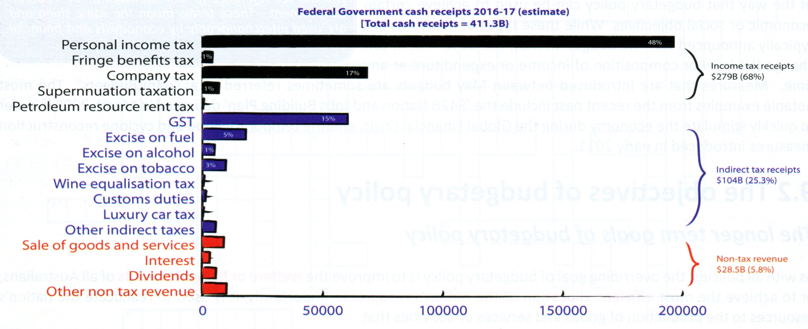
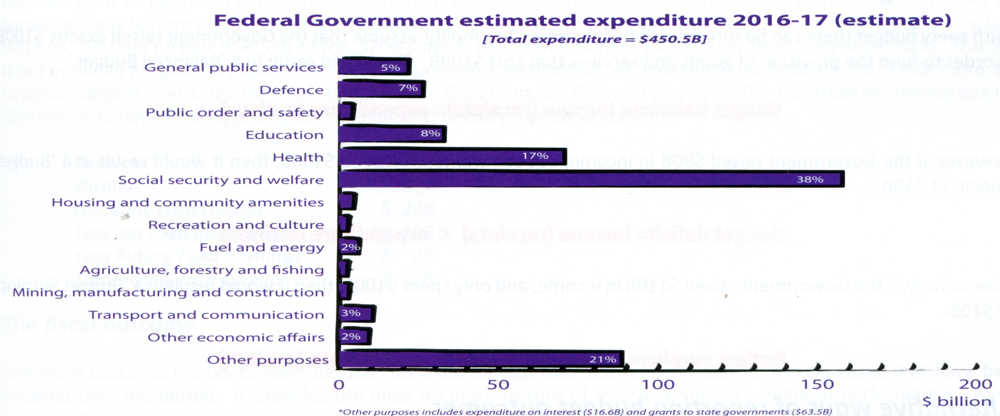
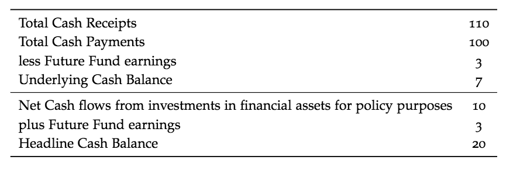

Budgetary Policy
Table of Contents
- 1. Nature and Operation of Budgetary Policy
- 1.1. Definition
- 1.2. Objectives
- 1.3. Composition of Revenue and Expenses
- 1.4. Budget Outcomes
- 1.5. Automatic and Discretionary Stabilisers
- 1.6. Fiscal Drag / Bracket Creep
- 1.7. Actual and Estimated Budget Outcomes
- 1.8. Expansionary v. Contractionary Budgets
- 1.9. Financing a Deficit / Investing a Surplus
- 1.10. Budget and Economic Goals
- 1.11. Budgetary Policy and Living Standards
- 1.12. Strengths and weaknesses of Budgetary Policy
- 2. NEXT Budgetary policy in Action
1 Nature and Operation of Budgetary Policy
1.1 Definition
Budgetary policy (Also known as Fiscal Policy) refers to the manipulation of the level and composition of Federal Government receipts and outlays in order to assist in the achievement of its economic and social goals for Australia. It is released annually each May and contains estimates or projections of all income and expenditure of the Government into the future. Though introduced in May, new measures or 'mini budgets' can be taken by the Government.
1.2 Objectives
The goal of all policies is to improve the welfare or living standards of all Australians and to achieve the most efficient allocation of the nation's resources.
This is achieved by:
- Strong and sustainable economic growth
- Low inflation
- Full Employment
This is clearly articulated in Government legislation (Charter of Budget Honesty Act 1998)
The Government's fiscal policy is to be directed at maintaining the on-going economic prosperity and welfare of the people of Australia and is therefore to be set in a sustainable medium-term framework.
1.3 Composition of Revenue and Expenses
The Federal Government collects approximately $411 billion per annum in receipts from various sources.


1.4 Budget Outcomes
The Budget can have three possible outcomes:
\begin{align*} \text{Budget Balance} &= \text{Income(receipts)} = \text{Expenditure(outlays)}\\ \text{Budget Deficit} &= \text{Income} < \text{Expenditure}\\ \text{Budget Surplus} &= \text{Income} > \text{Expenditure} \end{align*}There are also several ways the Commonwealth Government will report these outcomes.
1.4.1 Headline Cash Outcome
This is the total cash received by the Federal Government subtracted by the total cash paid. This can be misleading as it includes cash flows that do not directly impact on the economy.
1.4.2 Underlying Cash Outcome
The underlying cash outcome excludes the cash flows that are included in the headline cash outcome but that do not directly impact on the economy. It provides the best indicator of the budgetary policy stance of the Federal Government and the impact is it likely to have on the economy in the short term.
- Future Fund Earnings
- - interest and dividends earned by government owned 'Future fund'. Excluded as earnings are mandated to be reinvested.
- IFAAP
- - Investments in financial assets for policy purposes; including sale of government business enterprise (GBE), purchases of shares by the government or granting or repaying State Government debt. Excluded as does not directly add to economic activity
To illustrate (using hypothetical figures):

1.5 Automatic and Discretionary Stabilisers
Stabilisers - help to dampen the severity of booms and recessions in the business cycles.
2 types:
- Discretionary
- fiscal / budgetary policy determined by the government as per the annual budget
- Automatic
- changes to the budget that occur automatically following changs in the level of economic activity
1.5.1 Autmoatic
- Boom
- rising AD → higher employment, incomes and
profits
- Government tax revenues increases and welfare spending decreases
- Fiscal system is automatically becoming contractionary
- Recession
- falling AD → higher unemployment,
lower incomes and profits.
- Government tax revenues decreases and welfare payments increases
- Fiscal situation is automatically becoming expansionary
Discretionary stabilisers are used when the automatic stabiliser are not enough to correct a server boom or recession.
1.6 Fiscal Drag / Bracket Creep
This occurs during times of inflation for countries with a progressive tax system. When inflation occurs there is a decrease in the real wage and workers will demand an increase in nominal wage to keep up with inflatiion.
When the nominal wage increases, some workers are pushed into a higher marginal tax bracket which increases the 'average' rate of tax paid.
These have two effects:
- Increases the total personal income tax revenue received by the Federeal Government.
- Some taxpayers will experience a decline in their real disposable income because they will be paying a higher average rate of tax.
1.7 Actual and Estimated Budget Outcomes
The Department of Treasury releases the 'actual' budget figures for the previous financial year in September or October (16 months after the release of the budget).
- Estimated budget outcome
- - released in May
- Actual budget outcome
- - released in September or October
The estimated budget outcome heavily relies on forecasts for economic growth and other statistic which are never 100% accurate.
| Year 2 | |
|---|---|
| Receipts | $100B |
| Outlays | $120B |
| Headline cash deficit | $20B |
We have a budge deficit of $20B for year 2 and we prepare the Budget for year 3, where a budget deficit of only $3B is estimated. This estimated deficit is clearly dependantmeg on the discretionary changes the government expects to make to the budget, as well as any anticipated changes to the cyclical component of the budget. It is also expected the the economic growth for year 3 to be an estimated healthy 4%.
However, what would happen to the 'actual' budget outcome if economic growth was much lower? The actual deficit will be higher because the government overestimated tax receipts and understimated outlays. Not only will the budge tforecasts be inaccurate but any additional 'discretionary' changes made to the budget after its release in May will further widen the difference between the estimated and actual budget outcomes.
The most recent example of this is during the 2014-2015 Budget where the underlying budget deficit was estimated to be of $29.8B ( based on the Treasury assumption of 3.0% growth in nominal GDP). During the course of the year economic conditions deteriorated as the terms of trade fell by more than anticipated nad actual growth was a much lower 1.6%. This caused the actual budget deficit to increase to $37.9B.
1.8 Expansionary v. Contractionary Budgets
1.8.1 Budget Deficit vs Budget Surplus
If the government has a 'balanced budget' every year, this means that it is neither contractionary nor expansionary in terms of its impacts on the economy.
If the government delivered a 'budget deficit' it means the Federal Government will be injecting more into the economy than it is taking out, meaning it will be expansionary.
If the government delivered a 'budget surplus' it means the Federal Government will be taking more from the ecnommy than it is injecting, meaning it will be contractionary
1.8.2 Changes to the size of the deficit or surplus
If the government delivers a bigger surplus than the year before, then it is liekly to be considered a more contractionary budgetary policy stance and a smaller surplus is likely to be considered a less contractionary stance.
In contrast, a bigger deficit is likely to more expansionary and a smaller deficit less expansionary.
However it is possible for an expansionary budget to occur even when the budget surplus increases or when a contractionary budget budget deficit increases.
The Budgetary Policy Stance is determined by how much of the change to the budget outcome occurred automatically and how much of the change was deliberate.
- Example
Year Outcome ($B) 1 +10 2 +20 If the economy was growing strongly in year 1 causing the surplus to rise, then the surplus will have occured for cyclical reasons without any changes to the discretionary budget.
- Example
Year Outcome ($B) 1 +10 2 +15 Instead the government wants to reducce this surplus to $15B in yera 2 via spending measures or tax cuts. The budget surplus has still increased from $10B to $15B, but the Budget would be considered an expansionary one because it delivered a net stimulus to AD.
1.9 Financing a Deficit / Investing a Surplus
1.9.1 Budget Deficit \(R < E\)
Expansionary \(\rightarrow\) Rise in AD which impacts on production, employment and inflation
The gap is financed by government borrowing:
- Borrow from public and financial sector by sale of bonds
- Borrow from the RBA
- Overseas borrowings
- Less a feature of budgetary policy since the late 1980s because the government and the RBA wanted a clear separation of monetary and budgetary policies.
- Bond sales place upward presssure on interest rates crowding out the private sector. They also result in local borrowers borrowing in overseas lenders causing a higher exchange rate (crowding out of the external sector).
- Results in capital inflow causing upward presssure on the AUD. Less common form of financing deficit.
1.9.2 Budget Surplus \(R > E\)
Contractionary \(\rightarrow\) Fall in AD
Use of surplus:
- Save with RBA
- Place in special investment or savings fund
- Repay local and foreign debt
1.9.3 Problems with an expansionary budget deficit
Budget deficits can lead to a build up of government (public) debt over time. This creates a potential problem for governments in terms of the impact on government credit ratings. If downgraded this can lead to higher borrowing costs and a larger deficit.
Governments need to achieve the right balance by delivering deficits that do just enough to achieve its short to medium term goals without imposing too heavy a burden on taxpayers and the economy in the future.
1.9.4 Dealing witha budget surplus
While a deficit tends to contribute to crowding out, a surplus tends to do the opposite and contributes to crowding in of the private sector. A surplus means that the government becomes a net lender for that year and this leads to less pressure for funds in fincancial markets. Leading to a reduction in interest rates causing an increase in Consumption and Investment (Net exports).
1.9.5 Fiscal consolidation and the rationale for delivering a budget surplus
- Help buffer Australia against future economic decline as surplus funds can be saved and then spent.
- Helps to generate greater international investor confidence in Australian government finances preserving Australia's AAA credit rating.
- Allows the cyclical component of the budget to do its job of automatically reducing the deficit as the economy recovers.
- Allows monetary policy to better manage the economy.
1.10 Budget and Economic Goals
In terms of Australia's specific domestic macroeconomic goals, budgetary policy has a key role to play in the achieving of stability in the level of domestic economic activity (also referred to as Internal Stability)
1.10.1 Stablising the business cycle
In the past, governments used budgets to stabilise the level of domestic economic activity.
During a trough in the business cycle, the government would typically use the policy in a counter-cyclical way. It could seek to reduce the budget deficit or increase surplus by:
- allow automatic stabilisers to play their part
- implement a more 'expansionary' policy stance (by spending or decreasing tax burden.)
Similarly during a peak, the government could use the budget to slow demand inflationary pressure by:
- allow automatic stabilisers to increase the size of the surplus and slow growth
- implement a more 'contractionary' policy stance by decreasing spending (increase taxes)
1.10.2 Changing role of Budgetary Policy
The stabilisation role of budgetary policy became irrelevant during 1996-2007 during Howard Liberal Government. The government preferred to leave the stabilisation role of policy to the RBA.
Post 2007, the stabilisation role of budgetary policy became more evident where government delivered a mildly contractionary budget to assist RBA efforts. An expansionary budgetary policy was used to avoid a technical recession during the GFC.
Other ways the government assist with internal stabililty (simultaneous achievement of economic growth, full employment and low inflation.)
- Supply side initiatives boosting aggregate supply to boost growth, reduce inflation and create jobs.
- Demand side initiatives that aim to boost AD and create jobs.
1.10.3 Budgetary policy and low inflation
Budgetary policy can assist the RBA in a number of ways:
- Structural surplus to affect 'contractionary' impact on AD.
- Demand-driven inflation can be countered through restrained growth such as higher tax rates or lower government spending.
- Supply-driven inflation can be countered by supply side initiatives. (Reducing excise tax on petrol)
- Boost investment spending on infrastructure or capital works.
- Private sector incentives to increase investment.
1.10.4 Budgetary policy and strong and sustainable growth
Expanionary budget are usually expected to assist in achieving economic growth. This is the typical Keynesian approach used in the past to good effect as additional government spending (G1 and/or G2).
Special initiatives can also be introduced such as:
- Increased transfer payments (pensions)
- Bonus stimulus payments to taxpayers
- Personal tax cuts to increase disposable incomes
- Business tax (company tax rates)
- Increases to G1 or G2 spending (infrastructure)
- Accelerated depreciation allowanes to encourage greater investment in capital equipment
- Assistance to industry such as Grants for smaller business export markets.
- Subsidy support to business or industries to overcome natural disasters or changes in AUD
1.10.5 Budgetary policy and full employment
Budgetary policy is the primary policy to tackle the problem of unemployment. This is because it can be used to reduce cyclical unemployment by creating jobs at a macroeconomic level; reduce structural unemployment by assisting in re-training labour; and create job vacancies. Overall, it can be used for structural, cyclical, long-term or youth unemployment.
Microeconomic focused measures would include:
- A work for the dole scheme
- Increased funding for beter job placements
- Funding for the unemployed to start businesses
- Increased expenditure on training and education
- Subsidies to business to take specific job seekers (older, longer-term, younger)
- Welfare to work initiatives
1.11 Budgetary Policy and Living Standards
Besides the intermeidate goal of lviing standards. The budget is also used to reallocate resources during market failure. This can be done by:
- funding for the provision of public goods
- provision or support of goods with positive externalities in consumption or produciton
- taxes on goods with negative externalities in consumption or production
- establishment of a public sector monopoly (Australia Post)
- funding for bodies like the Australian Consumer and Competition Commission and the Australian Securities and Investments Commission
1.12 Strengths and weaknesses of Budgetary Policy
1.12.1 Strengths
- Target particular sectors
- Greater range of economic goals
- Impact lag
- Effictively stimulating AD
- Effect through automatic stabilisers
- Checks and balances
1.12.2 Weakness
- Political hurdles
- Political bias
- Imlementation lag
- Inflexible
- Less effective at restricting AD durin
2 NEXT Budgetary policy in Action
2.1 Recent use of the budget
2.1.1 The government's fiscal strategy
The current government's medium term fiscal strategy is to achieve budget surpluses, on average, over the course of the economic cycle. Key elements of the strategy are to:
- Redirecting government spending to quality investment that helps to boost productivity and workforce participation.
- Maintian strong fiscal discipline to reduce the government's share of the economy over time in order to free up resources for private investment to create jobs and boost economic growth.
- support growth in government revenue by developing policies that raise economic growth and national income.
- strengthen the government's balance sheet by improving net financial worth over time.
This medium term strategy is supplemented by a shorter term strategy. In the 2014-15 Budget, the government also released its 'Budget repair stratey' which involved achieving budget surplus to 1% of GDP by 2023-24. This required:
- any new spending intiatives will be more than offset by spending reudctions elsewhere in the budget.
- any cyclical improvement in the budget outcome will be 'banked' rather than spend
- a clear path back to surplus is underpinned by decisions that build over time.
2.1.2 Budget Figures
2.1.3 Budget Parameters
2.1.4 Changes to the budget outcome and stance over time
2.1.5 Budget Deficit and Commonwealth Government Debt
2.2 Specific budgetary policy initiatives
2.2.1 Personal Tax Cuts
- 2016-17
- 32.5% tax threshold increased from $80k to $87k.
$$ \uparrow\text{disposable income} = \ \uparrow\text{consumption and } \uparrow\text{AD} = \ \uparrow\text{growth} = \ \uparrow\text{employment} $$
2.2.2 Government (Infrastructure) Investment
- Infrastructure growth package
2.2.3 Business Tax Changes
2.2.4 Initiatives to directly reduce unemployment
2.2.5 Other Miscellaneous Budget Initiatives
2.3 Evaluating the effectiveness of budgetary policy
Evaluating the budget is difficult for several reasons:
- A number of budgetary policy initiatives can bhe held up in the Senate for a considerable period of time
- Many initiatives are rejected for economic or political reasons.
- They can take a considerable period of time before they begin to achieve the stated objectives.
- Effectiveness of any particular policy initiatives will be clouded by the influence of the huge array of other factors that impact on the achievement of the relevant macroeconomic goals.
The success of the government's fiscal strategy will be somewhat easier given that the target variables are largely within the government's direct control. As the economy moves through the business cycle over time into the future, we should expect the budget deficit to continue to fall and a surplus to develop as we approach the peak phase. If a surplus fails to materialise in this setting then it will be clear evidence that the government has failed to achieve its goal to achieve fiscal consolidation.